Before you begin
A reflection
Do you believe you have to sacrifice your family and your peace of mind before you can achieve your dream?
If yes — this book is not for you.
If no, but you don't know another way — keep reading.
The story
From Reactive to Unshakable
All my life, all I knew about success was a comfortable life, a steady job, and a great salary. To get that, I had to work hard by sacrificing my freedom and happiness. No one in my circle taught me otherwise. I had to learn it the hard way.
I left a stable job in France and came home to Cambodia for freedom and happiness with my two-year-old daughter. I was a high achiever and a single mother, building my first business, when the country was hit by a crisis I did not see coming. Pressure from every side: time, money, stability. I worked nonstop, the same way I had in my corporate job. My nervous system was always on. I burned out. Worse: I became the kind of mother I hated myself for being. I screamed when I was annoyed and when she did not listen. I promised not to do it again. I kept doing it.
So I stopped building completely. I could not let her inherit this reaction. I was less reactive, but the same trigger still ran me.
The story
From Reactive to Unshakable
That led me to the patterns we inherit. Our body remembers what our mind does not. I studied how reactions work, and how we rewire them. The way I worked, the beliefs I carried, the reactions I made were inherited and conditioned. When I reprogrammed my mind and regulated my state, everything shifted. I became less and less reactive, until the same trigger did not shake me. The vision I want now manifests without force.
I generated my first income one month after launching my community. I got funded on my vision within four months of setting the intention. The state we hold is the foundation of everything we build.
The sequence
The Unshakable Mind
Nine steps. One day. This is the whole sequence, before you use any of it.
- 00 Prime — smile, breathe, write, move, before the phone
- 01 Empty — get every task out of your head
- 02 Sort — must do, or can wait
- 03 Vision — see tonight before you spend the morning
- 04 Decide — one picture, one reason, three actions
- 05 Protect — put the three on the calendar
- 06 Execute — one thing at a time
- 07 Interrupt — can I control this?
- 08 Close — put the day down before sleep
How to enter
You do not do all nine at once.
Notice how you feel. The feeling tells you which step to open.
Tense — Prime. Head too full — Empty, then Sort. You don't know what matters — Vision, then Decide. Pulled away — Protect, then Execute. Spiraling, or the day still open — Interrupt, then Close.
One feeling. One step. That is enough for today.
Why it works
The science, in brief
Stress switches off the part of the brain that chooses. A plan made in advance is easier to follow. Repeating it makes it automatic.
Prime first, so you can choose. Decide the feeling before the trigger. Repeat the day until the calm state is home.
Want the full science behind each step? It's in the free printable edition.
00 Prime
You wake after the world is already awake.
The phone chooses the morning before you do.
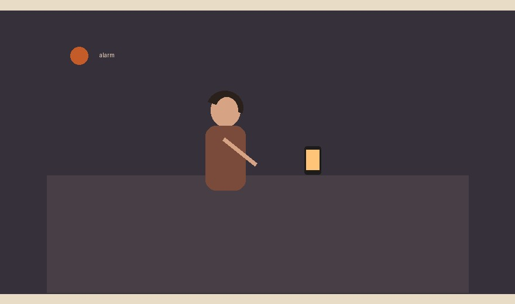
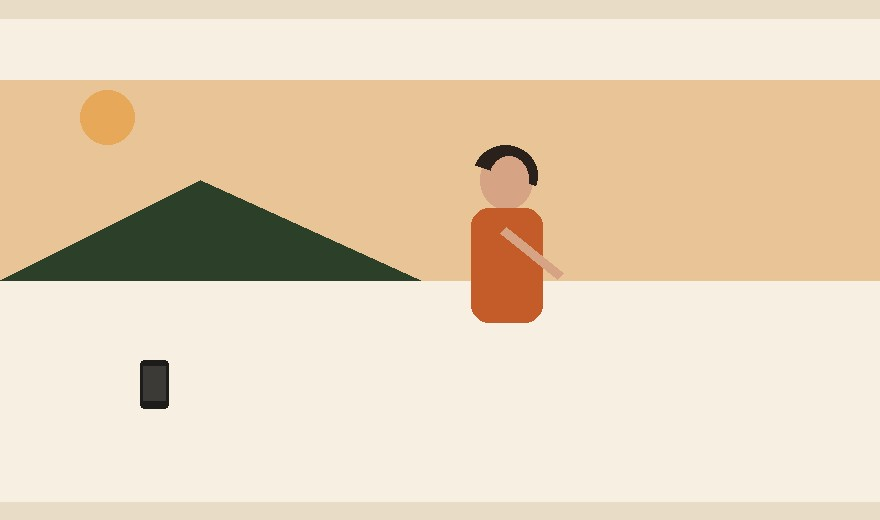
The Unshakable step. Smile. Breathe. Write the power statement. Move. Then the phone.
Stress turns off clear thinking. Calm brings choice back.
Sit with thisWho chose the first ten minutes — you, or the phone?
01 Empty
The whole day is still in your head.
You cannot see what to focus on, so you do whatever is loudest.
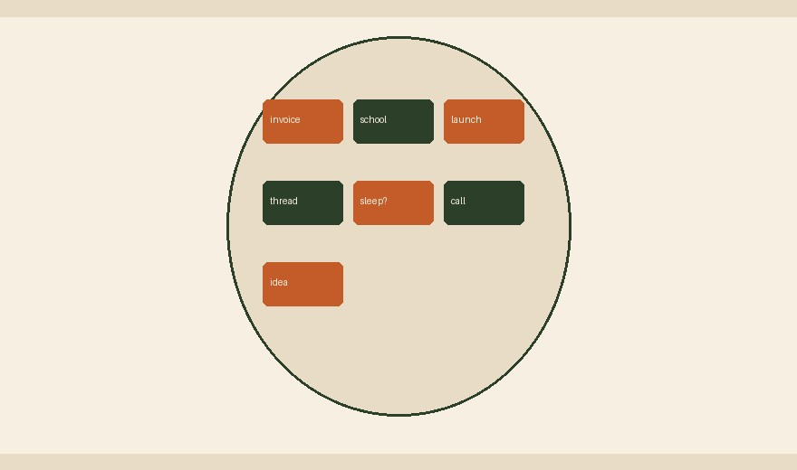
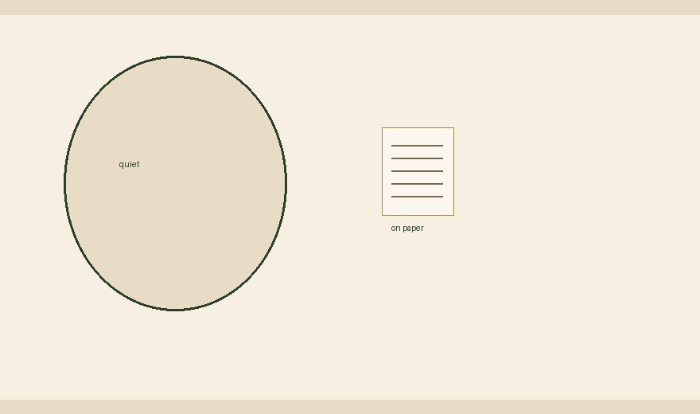
The Unshakable step. Write every task down. Do not sort yet.
Unfinished tasks keep circling until they are on paper.
Sit with thisWhat is circling because it has nowhere to go?
02 Sort
Everything on the list feels urgent.
You say yes to small things and drop what actually matters.
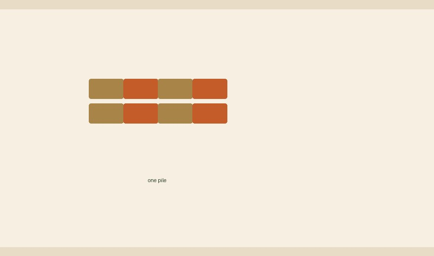
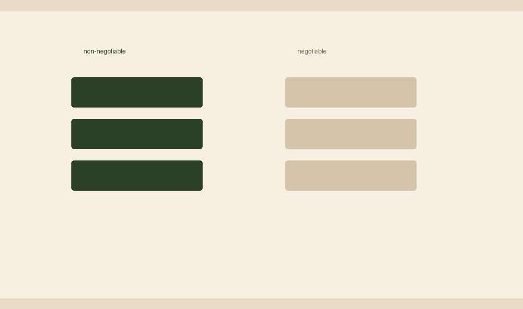
The Unshakable step. Two columns. Must do. Can wait.
The overwhelm is an unsorted list, not too much work.
Sit with thisWhat did you treat as urgent that could have waited?
03 Vision
You start the day with no picture of tonight.
Anything that arrives gets a yes, because you never decided what a good day looks like.
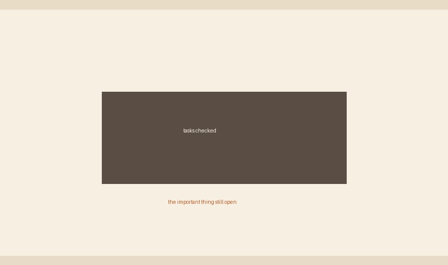
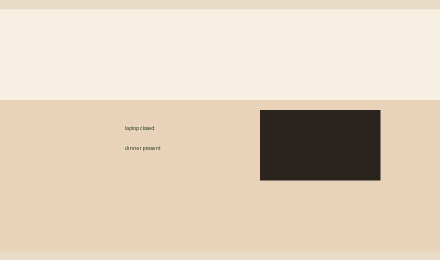
The Unshakable step. See tonight before you spend the morning.
The mind cannot hold a fog. It needs a picture.
Sit with thisWhat did you say yes to that did not belong to the day you wanted?
04 Decide
You choose thirty things and finish none.
Nothing important moves.
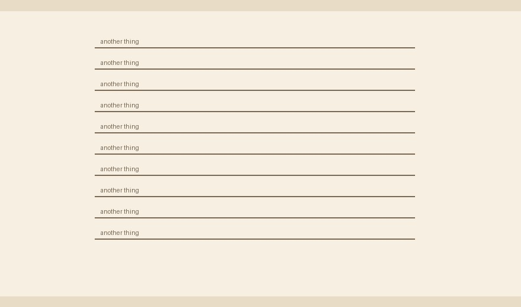
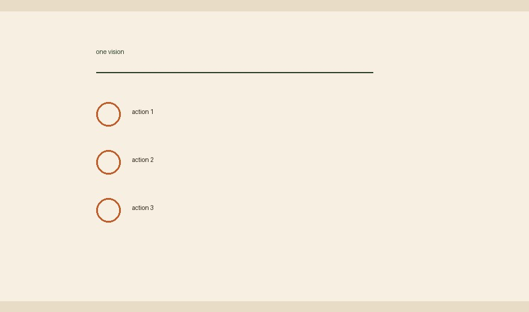
The Unshakable step. One picture. One reason. Three actions.
The mind cannot hold too many things. Three actions move the day.
Sit with thisHow many things were you trying to hold this morning?
05 Protect
The important work lives in the gaps.
Other people's messages spend the hours you meant for the dream.
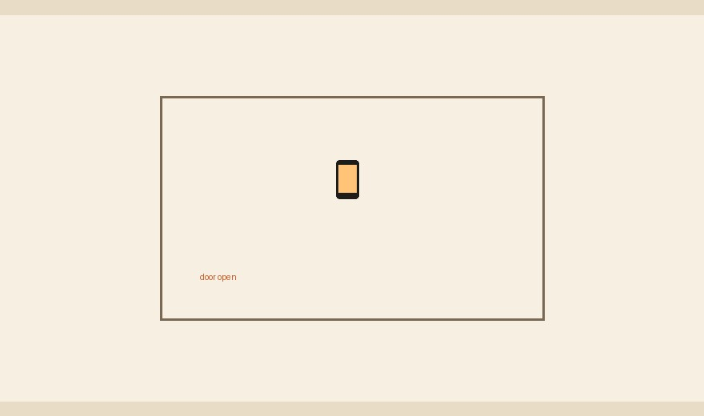
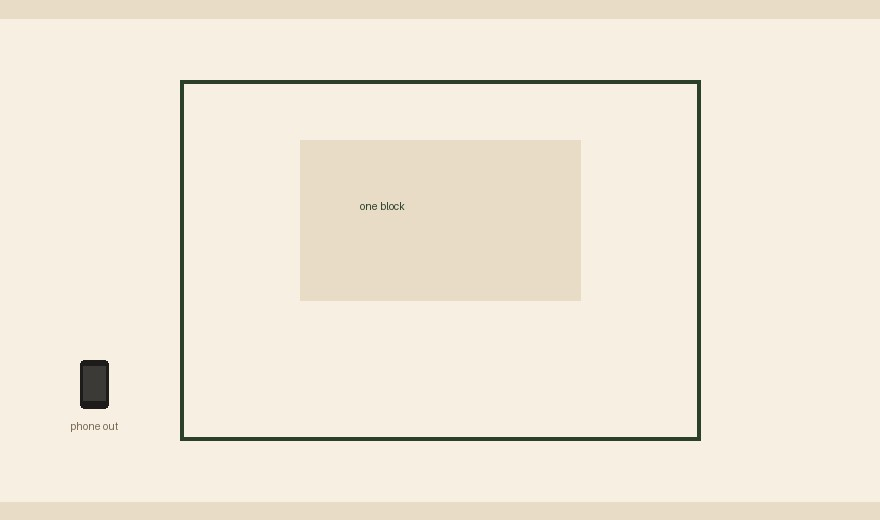
The Unshakable step. Put the three actions on the calendar. Phone out of the room.
What has no time on the calendar does not get done.
Sit with thisWhere did the work that builds your life actually live yesterday?
06 Execute
Five things open, and you call the switching progress.
The one thing that matters stays undone.
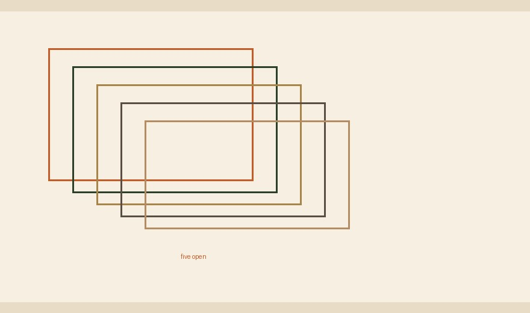
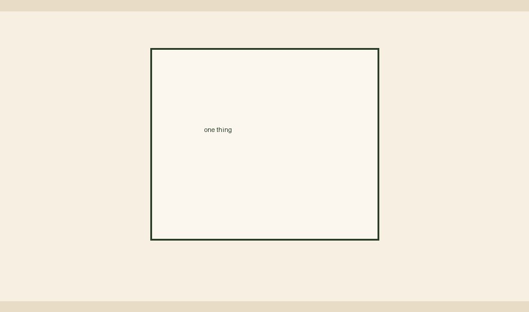
The Unshakable step. One action. If you get tense, Prime again, then return to the same thing.
One thing is faster than five half-finished things.
Sit with thisWhat were you avoiding by staying busy?
07 Interrupt
You keep replaying something you cannot control.
That hour does not go to the dream.
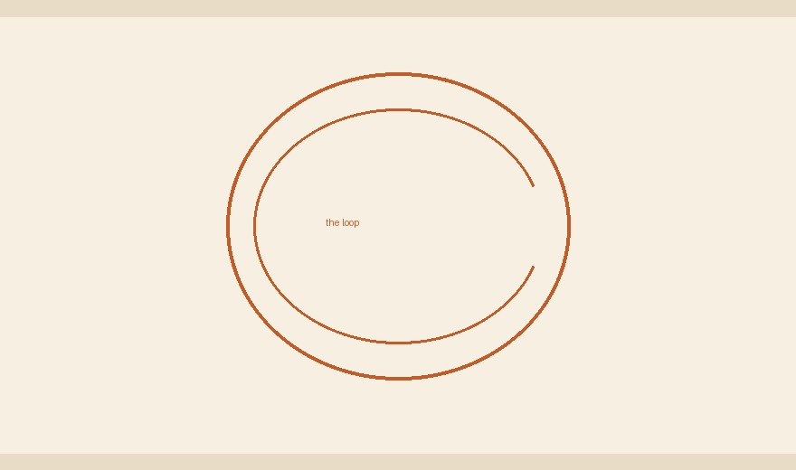
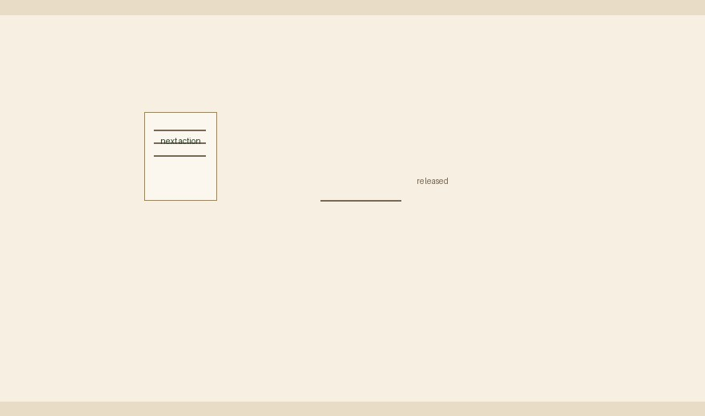
The Unshakable step. Write it down. Can I control this? Yes — next action. No — let it go. Part — only your part.
Acting on what you can control stops the spiral from spending you.
Sit with thisWhat did you spend the last hour on that was not yours to fix?
08 Close
You go to bed still worrying about the unfinished task.
You practice the stress as you fall asleep, so you wake already behind.
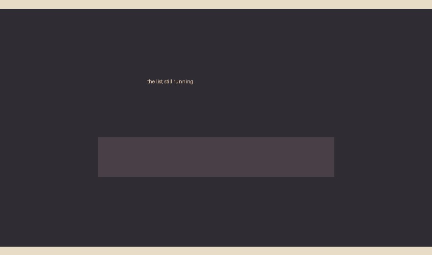
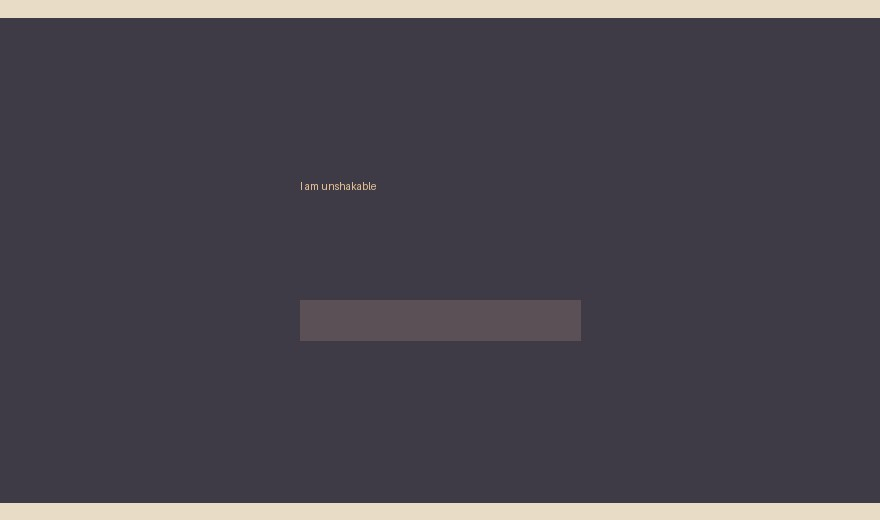
The Unshakable step. Put the weight down. Scan the body. Let the thoughts go. Then repeat the power statement.
Before sleep the mind is open. What you repeat there is what the night keeps.
Sit with thisWhat did you practice last night — the worry, or the statement?
The identity
Executive mode as home
Repeat the move until it is not a morning trick. It is who you are when nothing special is happening.
Rewiring identity is not a speech in the mirror. It is a nervous system that defaults to choice instead of chase. Science gives you the levers: state, attention, one action. Spirit gives you the reason: you are allowed to create a life instead of surviving one.
When force appears, you have left the move. Notice the feeling. Make the one move it is asking for.
About the author
Vannara Loch
Vannara Loch is a former software engineer and single mother by choice who knows firsthand the exhaustion of living in a reactive survival state. Realizing most people never upgrade their glitchy internal operating systems, she engineered a powerful daily protocol to shift the nervous system into Executive Mode. This ultimate setting reprograms the mind for total clarity, keeping you completely steady and certain of your next move — even in the middle of a storm.
Learn the full protocol live
Learn the full protocol live
Website
vannaraloch.online
Community
ener" onclick="event.stopPropagation()">Download Now
vannaraloch.online